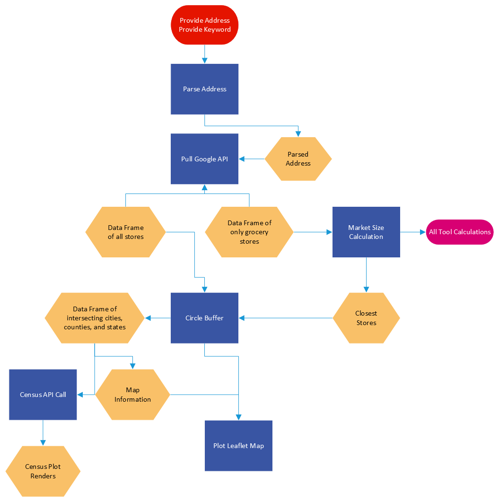

Progress
Finished automation on market area calculations
Figured out quarter circle method for determining the market area, got a direction from lat long coordinates
Made and improved visualizations for final product and presentation
Plots from SalesGenie data to show revenue for grocery stores of different sizes and city classifications
Worked on the map for final project
Started work on vignettes
Made interactive data tables
Finalized Shiny UI
Quarter Circle Map
Flowchart

Language By County
Going forward
Finish putting everything together so it works as one cohesive function
Fix any issues left, check math on calculations
Standardize documentation with roxygen following a style guide
Final Project Presentation Outline
We created our YouTube Trailer video for our project this week and also made a rough outline for the final project presentation. We are planning to divide our final presentations into 4 sections:
Introduction(Harun)
Project Overview:
Summary
Goal
The Excel tool
Literature Review & Data Collection:
Reading on Rural Grocery Stores
Selecting data to automate
Methods
Market Size Calculation (Alex)
Market area calculation
Quarter Circle
Voronoi
Reillys
Population
Rural Population
Metro Population
Town Population
Revenue Estimation (Srika)
Average Grocery Spend
State index and percentage price index:
Rural price parities(RUPP)
Consumer price index(CPI)
Update and Maintenance
Money spent by different categories of shoppers
Market trends
Visualization:
Non-Chain grocery store, Chain grocery store, Dollar store distribution
The RUCC Classification
City group classification
Expense Estimation (Aaron)
Expenses for Opening a Store
Cost of Goods Sold
Operating Expenses
Asset Depreciation
Loan Interest
Rent
Secondary Sources of Income
Income from interest
Other income
User-defined Inputs
Switching between multiple ownership scenarios
Input their own percentage values as sliders
The assets list can be customized to calculate depreciation
Custom loan and rent
Pre-Tax Profit Calculation
Design Choices (Harun)
Results (Harun)
- Dashboard Demo